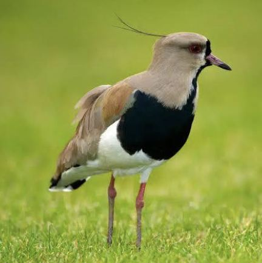
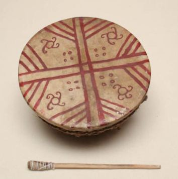

ClasesLas presentaciones de cada kimeltun
Ábrelas para repasar lo que vimos en clase. Desde el celular, usa «Abrir en pantalla completa».
Kiñe kimeltun: introducción, grafemarios y chalin
Epu kimeltun: saludos, nombres y primera persona
Küla kimeltun: inche, eimi, fey
Nombrar lo que nos rodea

txegül queltehue

txayenko cascada
txawün reunión

kultxug instrumento mapuche